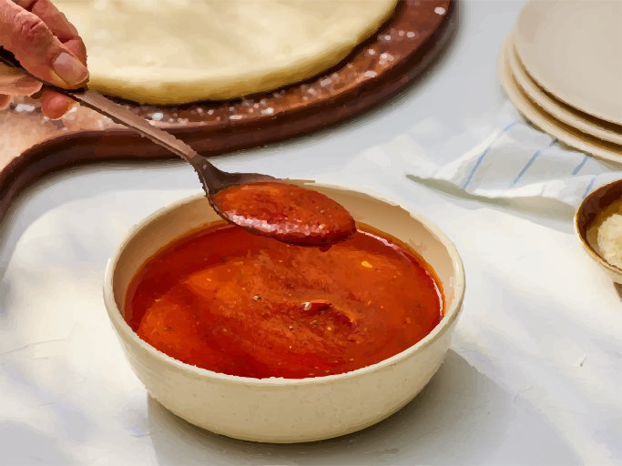

Home | The Odin Project
Making your own pizza sauce is easy and delicious!

Credit: Allrecipes - Dotdash Meredith Food Studios
This homemade pizza sauce recipe is perfect for any pizza night.
Could even use it as a dipping sauce instead!
Ingredients
- 1 cup water, or as needed
- 1 (6 ounce) can tomato paste
- ⅓ cup extra virgin olive oil
- 2 cloves garlic, minced
- ½ tablespoon dried oregano
- ½ tablespoon dried basil
- ½ teaspoon dried rosemary, crushed
- salt and ground black pepper to taste
Instructions
- Gather all ingredients.
- Mix together water, tomato paste, and olive oil in a large bowl or jar. Add garlic, oregano, basil, rosemary, salt, and pepper; mix well.
- For best results, let sauce stand for several hours to allow the flavors to blend. No cooking is necessary; just spread on pizza crust.
Total Time: 10 minutes
Servings: 8
Yield: 2 ½ cups